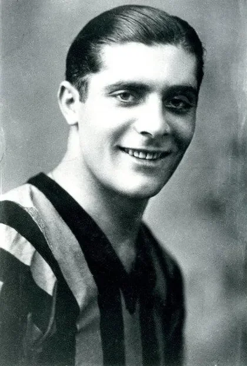

Photo source ↗Unknown author · Public domain
The profile
Giuseppe Meazza
Giuseppe Meazza was born in Milan and developed into a prolific forward at Inter. His skill and goals made him one of Italy's best-known players before the first World Cup held in Europe.
He could score from tight angles and create chances for other forwards. Most of his club success came with Inter, though he also played for AC Milan later in his career.
Meazza helped Italy win the 1934 World Cup at home and was later recognised in retrospective selections as its best player. He captained Italy when it retained the title in 1938, scoring a penalty against Brazil in the semi-final before the team beat Hungary in the final.
1934Italy
Champion
Round of 16 Italy7 : 1United States
- Angelo SCHIAVIO18′
- Raimundo ORSI20′
- Angelo SCHIAVIO29′
- Giovanni FERRARI63′
- Angelo SCHIAVIO64′
- Raimundo ORSI69′
- Giuseppe MEAZZA90′
- Aldo DONELLI57′
Italyhome
Starting lineup
- Giampiero COMBI
- Luigi ALLEMANDI
- Virginio ROSETTA
- Luigi BERTOLINI
- Giovanni FERRARI
- Giuseppe MEAZZA
- Luis MONTI
- Mario PIZZIOLO
- Raimundo ORSI
- Angelo SCHIAVIO
- Anfilogino GUARISI
Substitutions
- No substitutions
United Statesaway
Starting lineup
- Julius HJULIAN
- Ed CZERKIEWICZ
- George MOORHOUSE
- Peter PIETRAS
- Walter DICK
- Aldo DONELLI
- Tom FLORIE
- Billy GONSALVES
- Bill McLEAN
- Werner NILSEN
- Francis RYAN
Substitutions
- No substitutions
Quarter-final Italy1 : 1Spain
- Giovanni FERRARI44′
- Luis REGUEIRO30′
Italyhome
Starting lineup
- Giampiero COMBI
- Luigi ALLEMANDI
- Eraldo MONZEGLIO
- Armando CASTELLAZZI
- Giovanni FERRARI
- Giuseppe MEAZZA
- Luis MONTI
- Mario PIZZIOLO
- Enrique GUAITA
- Raimundo ORSI
- Angelo SCHIAVIO
Substitutions
- No substitutions
Spainaway
Starting lineup
- Ricardo ZAMORA
- I QUINCOCES
- CIRIACO
- CILAURREN
- IRARAGORRI
- Jose MUGUERZA
- FEDE
- GOROSTIZA
- LAFUENTE
- Isidro LANGARA
- Luis REGUEIRO
Substitutions
- No substitutions
Quarter-final replay Italy1 : 0Spain
- Giuseppe MEAZZA11′
Italyhome
Starting lineup
- Giampiero COMBI
- Luigi ALLEMANDI
- Eraldo MONZEGLIO
- Luigi BERTOLINI
- Giuseppe MEAZZA
- Luis MONTI
- Attilio FERRARIS
- Felice BOREL
- Atilio DEMARIA
- Enrique GUAITA
- Raimundo ORSI
Substitutions
- No substitutions
Spainaway
Starting lineup
- Juan NOGUES
- I QUINCOCES
- ZABALO
- CILAURREN
- Simon LECUE
- Jose MUGUERZA
- CRISANTO BOSCH
- I Guillermo CAMPANAL
- CHACHO
- Luis REGUEIRO
- Martin VENTOLRA
Substitutions
- No substitutions
Semi-final Italy1 : 0Austria
- Enrique GUAITA19′
Italyhome
Starting lineup
- Giampiero COMBI
- Luigi ALLEMANDI
- Eraldo MONZEGLIO
- Luigi BERTOLINI
- Giovanni FERRARI
- Attilio FERRARIS
- Giuseppe MEAZZA
- Luis MONTI
- Enrique GUAITA
- Raimundo ORSI
- Angelo SCHIAVIO
Substitutions
- No substitutions
Austriaaway
Starting lineup
- Peter PLATZER
- Karl SESTA
- Franz CISAR
- Josef SMISTIK
- Hans URBANEK
- Franz WAGNER
- Josef BICAN
- Toni SCHALL
- Matthias SINDELAR
- Rudi VIERTL
- Karl ZISCHEK
Substitutions
- No substitutions
Final Italy2 : 1Czechoslovakia
- Raimundo ORSI81′
- Angelo SCHIAVIO95′
- Antonin PUC71′
Italyhome
Starting lineup
- Giampiero COMBI
- Luigi ALLEMANDI
- Eraldo MONZEGLIO
- Luigi BERTOLINI
- Giovanni FERRARI
- Attilio FERRARIS
- Giuseppe MEAZZA
- Luis MONTI
- Enrique GUAITA
- Raimundo ORSI
- Angelo SCHIAVIO
Substitutions
- No substitutions
Czechoslovakiaaway
Starting lineup
- Frantisek PLANICKA
- Josef CTYROKY
- Ladislav ZENISEK
- Stefan CAMBAL
- Josef KOSTALEK
- Rudolf KRCIL
- Oldrich NEJEDLY
- Antonin PUC
- Frantisek JUNEK
- Jiri SOBOTKA
- Frantisek SVOBODA
Substitutions
- No substitutions
1938France
Champion
Round of 16 Italy2 : 1Norway
- Pietro FERRARIS2′
- Silvio PIOLA94′
- Arne BRUSTAD83′
Italyhome
Starting lineup
- Aldo OLIVIERI
- Eraldo MONZEGLIO
- Pietro RAVA
- Michele ANDREOLO
- Giovanni FERRARI
- Ugo LOCATELLI
- Pietro SERANTONI
- Pietro FERRARIS
- Giuseppe MEAZZA
- Silvio PIOLA
- Piero PASINATI
Substitutions
- No substitutions
Norwayaway
Starting lineup
- Henry JOHANSEN
- Oivind HOLMSEN
- Rolf JOHANNESEN
- Nils ERIKSEN
- Kristian HENRIKSEN
- Rolf HOLMBERG
- Arne BRUSTAD
- Knut BRYNILDSEN
- Odd FRANTZEN
- Magnar ISAKSEN
- Reidar KVAMMEN
Substitutions
- No substitutions
Quarter-final Italy3 : 1France
- Gino COLAUSSI9′
- Silvio PIOLA51′
- Silvio PIOLA72′
- Oscar HEISSERER10′
Italyhome
Starting lineup
- Aldo OLIVIERI
- Pietro RAVA
- Alfredo FONI
- Michele ANDREOLO
- Giovanni FERRARI
- Ugo LOCATELLI
- Pietro SERANTONI
- Amedeo BIAVATI
- Gino COLAUSSI
- Giuseppe MEAZZA
- Silvio PIOLA
Substitutions
- No substitutions
Franceaway
Starting lineup
- Laurent DI LORTO
- Hector CAZENAVE
- Raoul DIAGNE
- Etienne MATTLER
- Auguste JORDAN
- Jean BASTIEN
- Edmond DELFOUR
- Oscar HEISSERER
- Emile VEINANTE
- Alfred ASTON
- Jean NICOLAS
Substitutions
- No substitutions
Semi-final Italy2 : 1Brazil
- Gino COLAUSSI51′
- Giuseppe MEAZZA60′ · pen.
- ROMEU87′
Italyhome
Starting lineup
- Aldo OLIVIERI
- Pietro RAVA
- Alfredo FONI
- Michele ANDREOLO
- Giovanni FERRARI
- Ugo LOCATELLI
- Pietro SERANTONI
- Amedeo BIAVATI
- Gino COLAUSSI
- Giuseppe MEAZZA
- Silvio PIOLA
Substitutions
- No substitutions
Brazilaway
Starting lineup
- WALTER GOULART
- DOMINGOS DA GUIA
- MACHADO
- MARTIM
- AFONSINHO
- ZEZE PROCOPIO
- LOPES
- PERACIO
- PATESKO
- LUISINHO
- ROMEU
Substitutions
- No substitutions
Final Italy4 : 2Hungary
- Gino COLAUSSI6′
- Silvio PIOLA16′
- Gino COLAUSSI35′
- Silvio PIOLA82′
- Pal TITKOS8′
- Gyorgy SAROSI70′
Italyhome
Starting lineup
- Aldo OLIVIERI
- Pietro RAVA
- Alfredo FONI
- Michele ANDREOLO
- Giovanni FERRARI
- Ugo LOCATELLI
- Pietro SERANTONI
- Amedeo BIAVATI
- Gino COLAUSSI
- Giuseppe MEAZZA
- Silvio PIOLA
Substitutions
- No substitutions
Hungaryaway
Starting lineup
- Antal SZABO
- Sandor BIRO
- Gyula POLGAR
- Gyula LAZAR
- Antal SZALAY
- Gyorgy SZUCS
- Gyorgy SAROSI
- Pal TITKOS
- Gyula ZSENGELLER
- Ferenc SAS
- Jeno VINCZE
Substitutions
- No substitutions